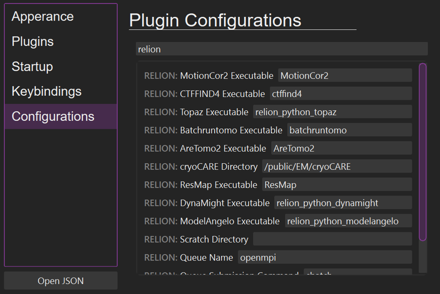

Getting Started
Run
himena relion
to launch the application.
Configuration
Before starting your image processing, you need to configure the paths to executables and scripts that RELION jobs will call.
Open the himena setting dialog (Ctrl+,) and select the "Configurations" tab. Type "relion" in the search bar, and you will see the configuration items related to RELION as shown below.

These values will be automatically used for the RELION jobs that take these executables or scripts as input.
Note
You can further customize the application, including dark background, keybinding, font etc. Please refer to the himena documentation.
Launch Existing RELION Project
himena-relion and RELION GUI is compatible. If you have an existing RELION project,
just run himena relion under the project directory
cd path/to/my-project
himena relion &
or pass the project path as an argument
himena relion path/to/my-project &
You can also open a RELION project by:
- Ctrl+O and select the default_pipeline.star file.
- from the "Recent Files" in the startup window.
- from the recent-file command palette (Ctrl+K → Ctrl+R)
Create New RELION Project
If RELION project is not initialized in the current directory yet, you'll have to create one. You can do this by opening the command palette (Ctrl+Shift+P) and running the "Start New RELION Project" command.

Once the default_pipeline.star file is created, you'll see a dock widget on the left. You can click any of the import jobs to start processing your data.

Job Flowchart
If your RELION project has jobs, the job flowchart will automatically created.

In this flowchart, you can double-click nodes to open the job window.
Job Window
A job window displays the content of the job directory. For most of the cases, the first tab will show the most informative representation of the job outputs, such as the processed micrographs, reconstructed particles, or 2D class images.
Each job window runs an independent file watcher so that the content will be automatically updated (in reasonable time intervals).

The top-left corner has useful actions.
The tool button 1 contains actions that are related to RELION job windows (no matter what job it is), such as "Overwrite" and "Mark As Finished".
The tool button 2 contains hints for the next actions. For example, in a 2D classification job window, you will see "Select Class". These action hints are very convenient way to run the next job, as the input parameters will be automatically filled.
Scheduling Next Jobs
To run the next job, you can: - Click the action hint in the job window - Open the command palette (Ctrl+Shift+P) and type the name of the job you want to run. - In the menubar, go to "Tools > RELION" and find the job you want to run.

-
By clicking the "Run" button, a job.star file will be created and passed to
relion_pipeliner, which will organize the job pipeline and run the job. -
You can drag-and-drop the items in the input/output panels to fill some of the job parameters (yellow line).
Note
Some of the RELION built-in jobs are split into different job types in
himena-relion. For example, the "Motion correction" job in RELION is split into "Motion Correction (MotionCor2)" and "Motion Correction (RELION)". They are the same
job type when viewed in RELION GUI, but look different in himena-relion. This is
because many RELION built-in jobs have incompatible input parameters that could be
confusing for beginners (e.g. "Write output in float16" is incompatible with "Use RELION's own implementation"). In himena-relion, parameter fields are
re-categorized so that running jobs is more straightforward.
Job scheduling
himena-relion automatically schedules the job instead of running it immediately,
when any of the input files are not ready or any of the parent job is not finished.
This feature is currently integrated with the file watcher for default_pipeline.star
so that the scheduled jobs will not automatically start if you quit the himena
process.